FDU · 数值算法与案例分析 Ⅰ · 2026 秋
公式完整版：所有数学式子由随仓库提交的 KaTeX 本地渲染，断网可用、目录可跳转。 只看图与结论的速览版见 README.md。
这一份解决什么
GitHub 的 Markdown 对 $...$ 有严格边界要求（前面必须是 ASCII 空白或标点），
紧贴中文时公式会退化成美元符号原文；块公式写成一行还会被降级成行内，把行距撑歪。
这一页是独立 HTML，不经过 Markdown 解析：行内公式仍写 $...$，
块公式改写为 \[...\] display 定界符，全部交给本地 KaTeX 渲染。
来源三态（读之前先分清）
题目原文来自老师每周的 PDF（2026-MM-DD/homework-*.pdf）；
代码是我本人写的作业脚本；图由本机 MATLAB R2025a 无头模式实跑导出。
标了「含补做图」的两节，作业原脚本只打印数值、不画 figure，那几张图由我另写的
visualize/ 脚本生成，不是作业代码的输出。
各节「题目在问什么」「这张图在说什么」是我写的解读，不是老师给的标准答案。
把每周作业题、我自己写的 MATLAB 代码、以及代码跑出来的图放在一起对照。每一道题先看「在问什么」，再看图说了什么结论——图不是装饰，是用来把题目里那句「What do you observe?」变成能看见的东西。
作业代码/
├── README.md ← 本文件
├── 2026-10-20/ ← 一周一个目录
│ ├── homework-20261020.pdf ← 老师出的题目原文
│ ├── P2_Pascal_INVIT_RQI.m ← 题号前缀 + 内容描述
│ └── ...
├── figures/2026-10-20/ ← 这一周跑出来的图
│ └── 20261020_P2_Pascal_INVIT_RQI_fig1.png
└── visualize/ ← 两道「原脚本只打印数字」的题，补做的可视化脚本
├── VIS_P1_eigenvector_visualization.m
└── VIS_P4_Jordan_forward_error.m
文件名的 P<n>_ 前缀对应题目 PDF 里的第 n 题。没有代码的题不编造代码，在每周末尾列出并说明为什么没有。
⚠️
Homework & Exam/数值算法 01–13是往届学长的作业解答，PDF 里带姓名学号，不是我的成果，不入库，只作参考。 题目 PDF 的版权归复旦大学及授课教师所有，这里仅为个人复习存档。
| 情况 | 处理 |
|---|---|
10.20数值作业/RQgenerateuppertriangular.m 名实不符（内容其实是 Hessenberg 约化的正交性检查） |
按内容重命名为 2026-10-20/P5_Hessenberg_orthogonality_early.m，作为 P5 的早期版本保留，与正式版并列 |
11.3数值作业/ 是空目录，11-03 的 P4 代码散在 MATLAB 根目录 |
收进 2026-11-03/P4_Jordan_eigenvalue_error.m |
10.13数值作业/Arnoldi.m 把函数定义写在脚本段之前 |
原样入库（MATLAB 会报错）。重绘时把第 1–43 行的局部函数挪到文件末尾即可；本仓库的图就是用调整顺序后的临时副本跑的，代码内容未改 |
10-27 P1 与 11-03 P4 的作业脚本只 disp 数字、不画 figure |
不改动作业代码，另写 visualize/ 下两份脚本补图，下面会标明哪些图是补做的 |
% 普通作业脚本：进入对应周目录直接运行，figure 会显示出来
cd('2026-10-20'); P2_Pascal_INVIT_RQI
% 补做的两份可视化：直接运行即可，PNG 自动写进 ../figures/<周>/
cd('visualize'); VIS_P1_eigenvector_visualization
cd('visualize'); VIS_P4_Jordan_forward_error
批量导出用的是 matlab -batch + set(0,'DefaultFigureVisible','off') + print(h,'-dpng','-r130')，中文标签在本机默认字体下正常。随机矩阵都设了种子（作业脚本自带的 rng 保留），不同机器重跑数值量级一致、末位会有差别。
| 周次 | 题目 PDF | 有代码的题 | 图 | 一眼看懂的结论 |
|---|---|---|---|---|
| 09-08 | P5 | 1 | Gaussian elimination 的计时在 log–log 上斜率 2.58，接近理论的 $O(n^3)$ | |
| 09-15 | — | 0 | 浮点误差分析周，代码是 C++，未入库 | |
| 09-22 | — | 0 | 三对角 GE 精度，代码是 C++，未入库 | |
| 09-29 | — | 0 | P4 六种 QR 正交性比较（题目要求画图），当时没留代码 | |
| 10-13 | P2, P5 | 2 | Arnoldi 的正交性随 $k$ 丢到 $10^{-6}$；正矩阵幂法一步就收敛 | |
| 10-20 | P2, P3, P5×2 | 6 | RQI 比 INVIT 快；子空间迭代「多取一列」才不卡住；MGS-Arnoldi 在退化矩阵上彻底不正交 | |
| 10-27 | P1, P4, P5 | 7 | 回代分母就是特征值之差；$f(\lambda)$ 的根与特征值一一交错；Jacobi 的收敛史 | |
| 11-03 | P4 | 3 | Jordan 块把 $10^{-16}$ 的舍入放大成 $10^{-4}$ 的特征值误差 |
题目 PDF：homework-20260908.pdf（P1–P5 必做，P6–P7 选做）
题目在问什么：自己写一个不选主元的 Gaussian elimination 解线性方程组，矩阵规模 $n$ 从大到小各异，量一下每个 $n$ 花多少秒，然后在双对数坐标上画出来——本质是让你用实验验证「运算量 $\sim n^3$」这句话。
代码：P5_GE_timing_loglog.m 做法：对标准正态随机矩阵做 LU（无 pivoting），tic/toc 计时，$n=100\sim 2400$。
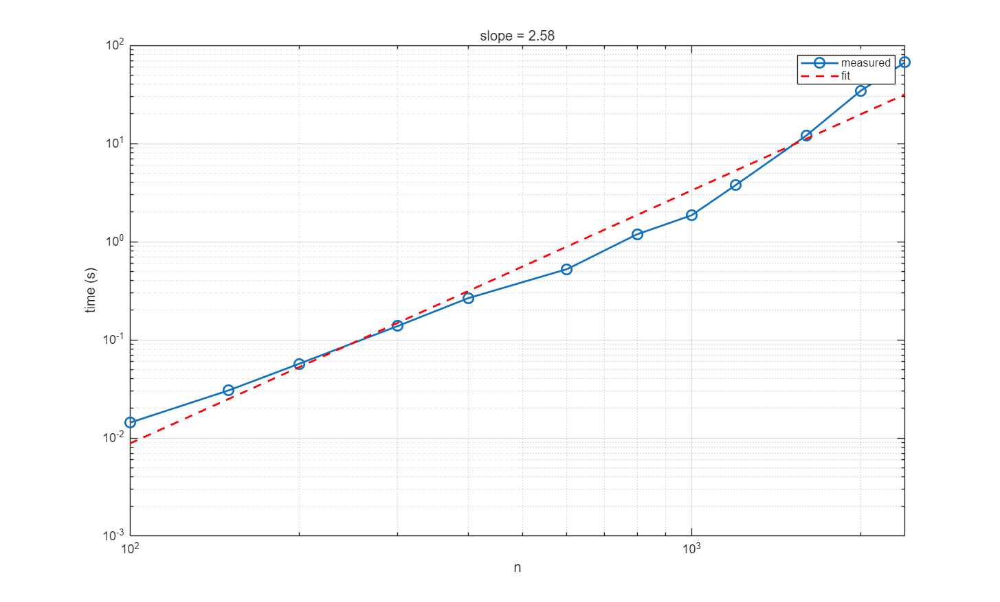
这张图在说什么：横轴 $n$、纵轴耗时都是对数刻度，蓝点连成的直线斜率拟合得 2.577，红色虚线是参考斜率。理论上 GE 的浮点运算量是 $\tfrac23 n^3$，斜率该是 3；实测偏小，因为 $n$ 还小、BLAS 的矩阵乘法和内存访问常数项没进入渐近区，另外计时包含了矩阵生成开销。跑到 $n=2400$ 用了 67.2 秒，已经是 $n=100$ 时的约 4700 倍。
其余题：P1 解上三角方程组的两种实现、P2 原地求 $L^{-1}$（只访问下三角、$O(1)$ 辅助空间）、P3 证明带状矩阵的 $L,U$ 保持半带宽 $b$、P4 手算一个特殊矩阵的精确 LU —— 都是推导/实现题，未留代码。
这三周没有入库的代码，也没有图，如实说明：
| 周次 | 题目 PDF | 情况 |
|---|---|---|
| 09-15 | P2「单精度算调和级数，观察到什么」有 C++ 程序 floatestimateharmonicseries.cpp（在工作区根目录，按约定未入库）。这周题目是浮点格式、相对误差、cancellation、$fl(Ax)=(A+E)x$ 的界，以推导为主 |
|
| 09-22 | P5「三对角方程组有/无 pivoting 的精度比较」有 C++ 程序 GAUSSaccuracy.cpp（未入库）。P3 growth factor 上界、P4 Householder 反射存在条件都是证明题 |
|
| 09-29 | P4 明确要求画图：六种 QR（Cholesky-QR / Householder / CGS / MGS / CGS2 / MGS2）用 imagesc 比较 $\|Q^*Q-I\|$ 的逐元素正交性损失和 $\|A-QR\|_F$。当时没留代码，这是 10-20 P5 那份 Hessenberg 代码里 imagesc 图的「前身」，可以对照看。P5 拟合 $\{(n,\ln n)\}$ 的直线同样无代码 |
三周的共同主题是误差从哪来：09-15 是表示与舍入，09-22 是条件数与 growth factor，09-29 是正交性损失。后面 10-13 的 Arnoldi 图、10-20 的 Hessenberg 图，其实是在同一个问题上继续往深里走。
题目 PDF：homework-20261013.pdf
题目在问什么：给矩阵 $A$ 和向量 $r$，把 $\{r, Ar, A^2r,\dots\}$ 张成的空间找一组标准正交基出来（就是 Arnoldi 过程），实现它，并把「这组基慢慢变得不正交」这件事画出来。
代码：P2_Arnoldi_orthogonality.m 做法：$200\times200$ 复随机矩阵、$k=100$；红线是单次 MGS 的 Arnoldi，绿线是每步重正交化两遍的版本；纵轴画前 $j$ 列的 $\|Q_j^*Q_j-I\|_F$。
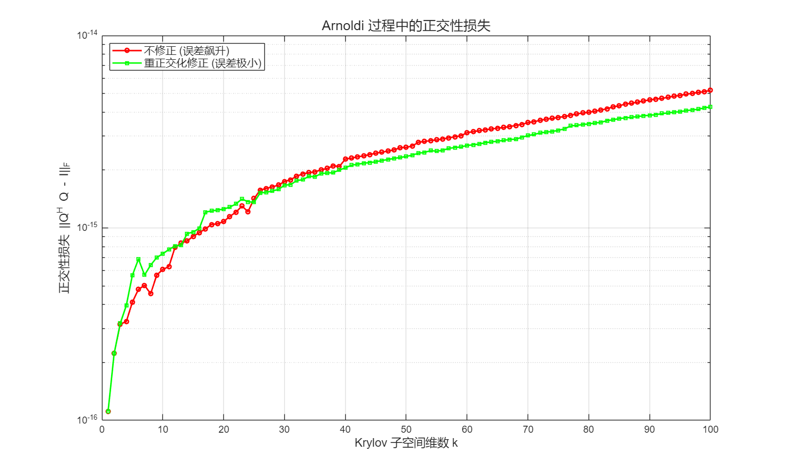
这张图在说什么：两条曲线都随 $k$ 单调上升——不修正（红）到 $\sim10^{-6}$，重正交化（绿）到 $\sim10^{-7}$，只低了约一个数量级。这就是题目要的 observation：长递推里 MGS 一步步把舍入误差累积进 $Q$，$k$ 越大越不正交。
⚠️ 有两处要照实说：① 代码图例写「重正交化修正 (误差极小)」，但图上绿线同样升到 $10^{-7}$，并没保持机器精度——说明这里的重正交化只做了一次 MGS 的补正交，不足以完全压住损失；② 题目要求「visualize the loss of orthogonality」，图做到了，但没有和 CGS 或完全重正交化（CGS2/MGS2）对照。想看那层对比可以接 09-29 P4。
关联笔记：10.20 课堂笔记 §4.3–§4.5（Arnoldi 正交化的板书逐行、为什么 $Aq_j$ 只落在前 $j+1$ 个方向）；10.13 补课笔记 §2.4.3（Krylov → 换酉基）。
题目在问什么：造一个元素全为正的 $1000$ 阶随机矩阵，用幂法求谱半径 $\rho(A)$，把收敛过程画出来。
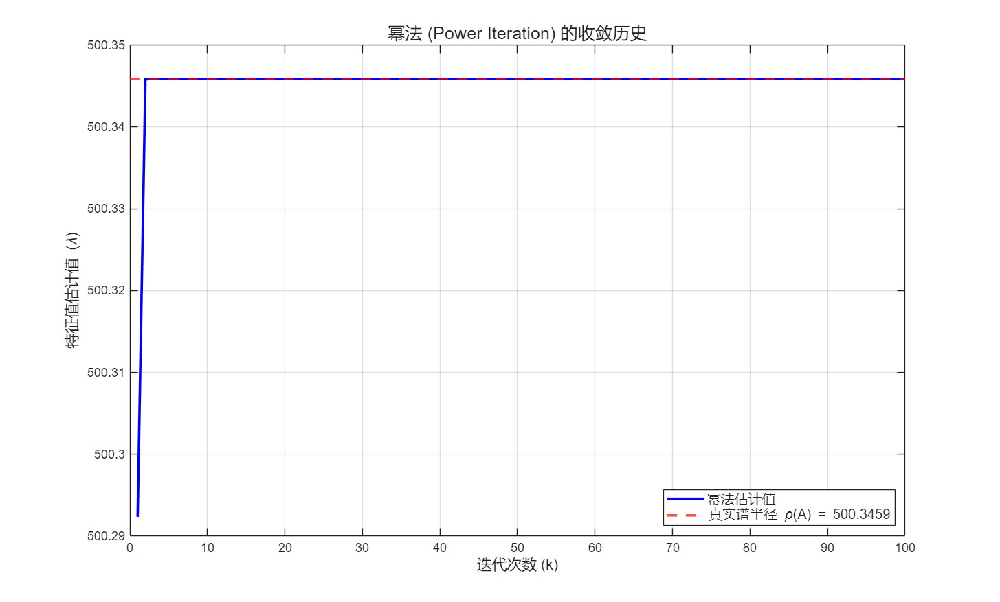
这张图在说什么：蓝线是每步的 Rayleigh 商/特征值估计，红色虚线是 $\rho(A)=500.3459$。图看起来几乎就是一条水平线——第 2 步就已经贴上真值，100 步后差 $5.68\times10^{-13}$。原因是随机正矩阵由 Perron–Frobenius 定理保证主特征值唯一为正，且 $|\lambda_2/\lambda_1|$ 极小（次大模被 $n$ 个随机正项平均掉了），幂法的收敛率就是这个比值。纵轴范围只有 $500.29\sim500.35$，是把收敛史放大到能看清的尺度。
其余题：P1 证明 $AXA=A$ 与 $(AX)^*=AX$；P3 讨论「模最大特征值有 $k$ 重时幂法会怎样」、P4 讨论 $A=\begin{bmatrix}\lambda&1\\0&-\lambda\end{bmatrix}$ 上幂法会怎样 —— 这两题是纯讨论题，没有代码，但 10.13 补课笔记 §1.4 的两个附注正是为回应它们写的（前者破坏「$\lambda_1$ 半简单」、后者破坏 $|\lambda_1|>|\lambda_2|$）。P6–P9 的 QRCP / GLS / GTH 未做。
题目 PDF：homework-20261020.pdf
题目在问什么：$10\times10$ 的 Pascal 矩阵 $P_{10}$，用反幂法（INVIT）和 Rayleigh 商迭代（RQI）各求一次最小特征值，把两条收敛曲线放一起比。
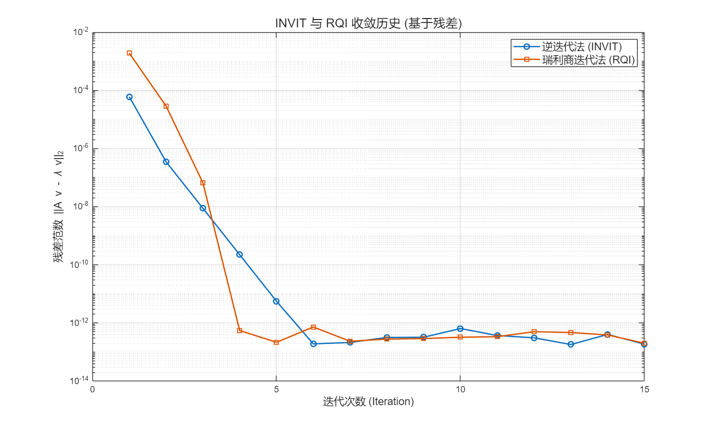
这张图在说什么：纵轴是残差 $\|Av-\lambda v\|$（对数刻度，$10^0$ 到 $10^{-16}$），横轴迭代次数。橙色的 RQI 约 5 步就砸到机器精度平台，蓝色的 INVIT 要 8 步左右——这就是三次收敛 vs 线性收敛的差别。两者最后都停在 $10^{-15}$ 附近不再下降，因为最小特征值只有 $1.5513\times10^{-5}$（INVIT 得 1.551328375389123e-05，RQI 得 1.551328374622169e-05），$P_{10}$ 极度病态，残差到底也压不下去。
关联笔记：10.13 补课笔记 §2.6 RQI（三次收敛的两块拼图、分量→夹角的桥接）。
题目在问什么：$21\times21$ 的 Wilkinson 矩阵 $W_{10}$ 求最大的 5 个特征值。分别用 5 列和 6 列的初始子空间跑子空间迭代，问你「观察到什么」——这是全周最值得画的一题。
代码：P3_Wilkinson_subspace_iteration.m
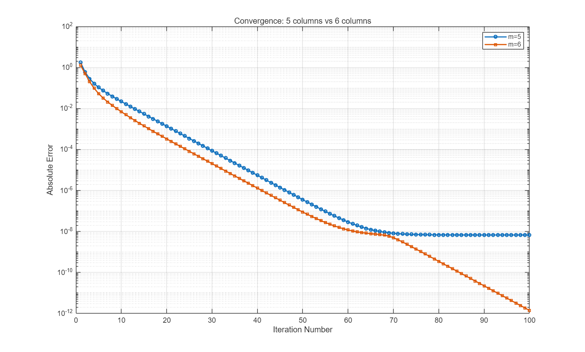
这张图在说什么：蓝线（5 列）降到 $10^{-8}$ 就平了，100 次迭代也不再动；橙线（6 列）一路降到 $10^{-15}$。人话解释：$W_{10}$ 的第 5、6 个特征值模几乎相等，取 $p=5$ 时收敛率是 $|\lambda_6/\lambda_5|\approx1$，等于没有收敛；多取一列让分母换成 $\lambda_7$，收敛立刻恢复。这正是课上「多取一列」那条实用建议的来源。
关联笔记：10.20 课堂笔记 §3.4 有这段的完整推导（$X_0=VC$ 推出 $\rho=|\lambda_{p+1}/\lambda_p|$，并专门讲了 $W_{10}$ 卡在 $10^{-8}$ 平台）。
题目在问什么：用 (a) Householder 反射 (b) 基于 MGS 的 Arnoldi 过程，各实现一遍 $A=QHQ^*$，然后检查 $\|Q^*AQ-H\|_F$ 和 $\|Q^*Q-I\|_F$ 两个精度指标，问你观察到什么。
正式版代码：P5_Hessenberg_Householder_vs_Arnoldi.m
早期版代码（原名 RQgenerateuppertriangular.m）：P5_Hessenberg_orthogonality_early.m
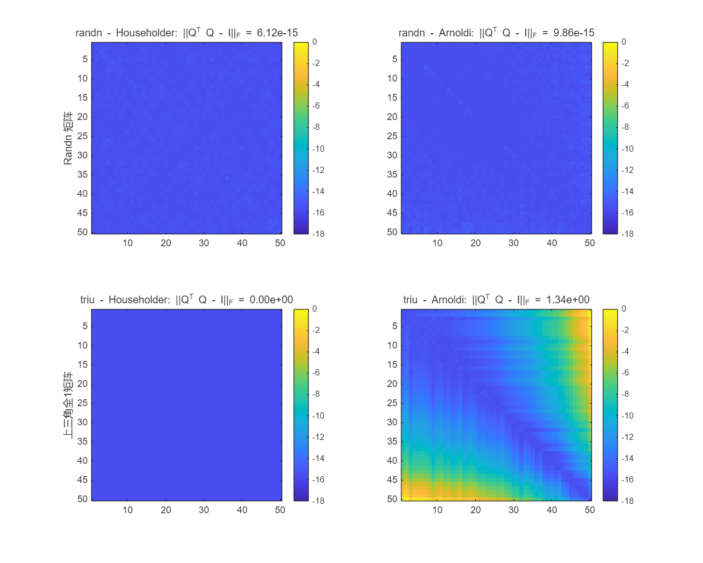
第一张图在说什么：四幅 imagesc 画的是 $|Q^*Q-I|$ 的逐元素绝对值（色标 $10^{-15}$ 到 $10^1$），上排随机矩阵、下排 $A=\mathrm{triu}(\mathbf 1,1)$（全 1 严格上三角）。标题里的 Frobenius 范数：
随机 randn 矩阵 |
triu(ones(n),1) |
|
|---|---|---|
| Householder | $6.12\times10^{-15}$ | $0.00$（精确正交） |
| Arnoldi (MGS) | $9.86\times10^{-15}$ | $1.34$（完全不正交） |
随机矩阵上两者都好；换成退化的上三角阵，MGS-Arnoldi 的 Krylov 序列几步就塌到同一个方向，$Q$ 的列几乎平行，色图右下/右上出现大片黄绿色的非零带。Householder 是乘一串正交变换，不受输入矩阵影响。
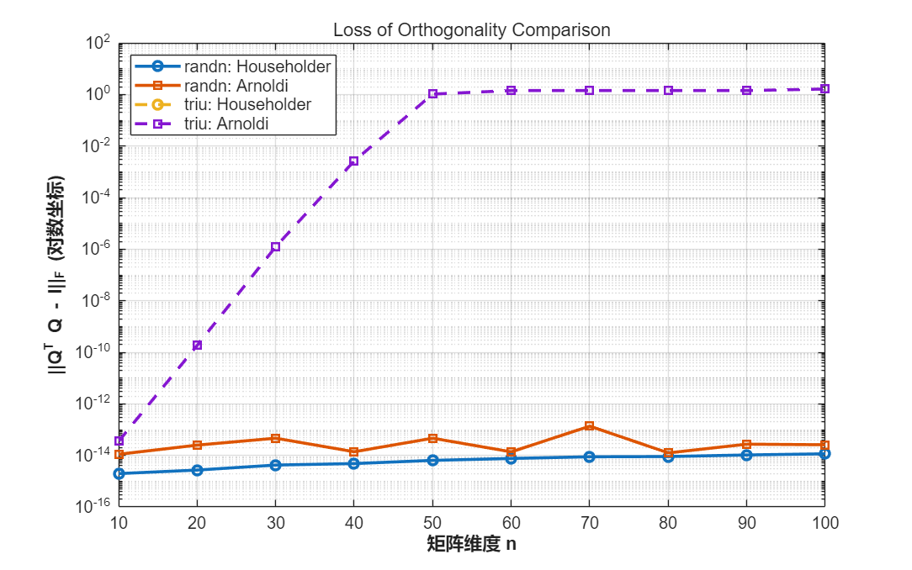
第二张图在说什么：把 $n=10\sim100$ 扫一遍，纵轴 $\|Q^*Q-I\|_F$（对数）。三条实线（随机矩阵两种、上三角 Householder）稳定在 $10^{-14}\sim10^{-13}$；紫色虚线 triu: Arnoldi 从 $10^{-12}$ 一路冲到 $\sim10^{1}$ 后在 $n\ge50$ 饱和——维度越大越糟，而且不是缓慢变差，是量级上的崩塌。
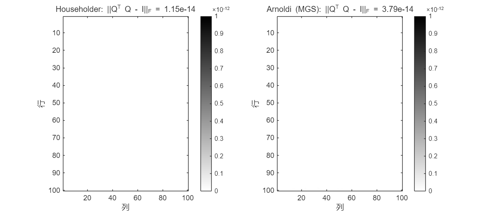
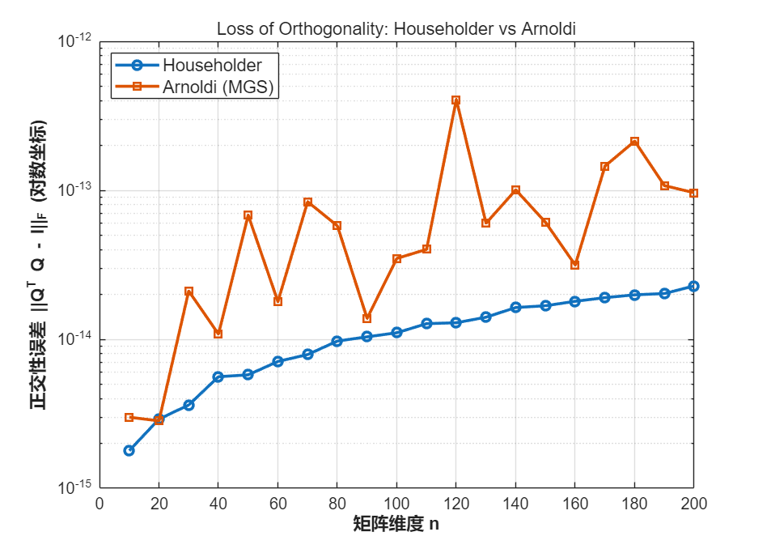
早期版两张图：灰度色图里 Householder 是 $1.15\times10^{-14}$、Arnoldi(MGS) 是 $3.79\times10^{-14}$，后者左下角已有明显的亮色扇形（误差集中在后生成的列之间，正是 MGS 逐步累积的样子）；$n=10\sim200$ 的扫描里，Householder 平滑地从 $10^{-15}$ 爬到 $3\times10^{-14}$，Arnoldi 则在 $10^{-14}\sim10^{-12}$ 之间震荡。
⚠️ 这份实现相对题目要求缺了一块：题目要同时检查 $\|Q^*AQ-H\|_F$ 和 $\|Q^*Q-I\|_F$，但上面六张图画的全是后者，代码里也没有算 $Q^*AQ-H$。正交性这一半的结论是可信的，另一半指标还没有验证。
其余题：P1 证明 Rayleigh 商的误差是 $O(\epsilon^2)$（对应 10.20 课堂笔记 §2.2 的角度刻画）、P4 证明带位移 QR 迭代的多项式恒等式（§7.2）——都是证明题。P6 选做的 plain QR 算法未做。
题目 PDF：homework-20261027.pdf
eig含补做图题目在问什么：对角元互不相同的上三角阵，自己写程序把所有特征向量算出来，再和数学库（MATLAB eig）的结果比一比。
作业代码：P1_upper_triangular_eigenvectors.m 做法：$n=50$，对每个 $\lambda=A_{ii}$ 从 $v_i=1$ 出发向上回代
再归一化。原脚本只 disp 三个数：特征值误差 $0$、特征向量最大残差 $2.15\times10^{-14}$、与 eig 的绝对值差 $3.40\times10^{-16}$，不画图。
补做的可视化脚本：VIS_P1_eigenvector_visualization.m（沿用同一个回代公式，下面两张图由它生成）
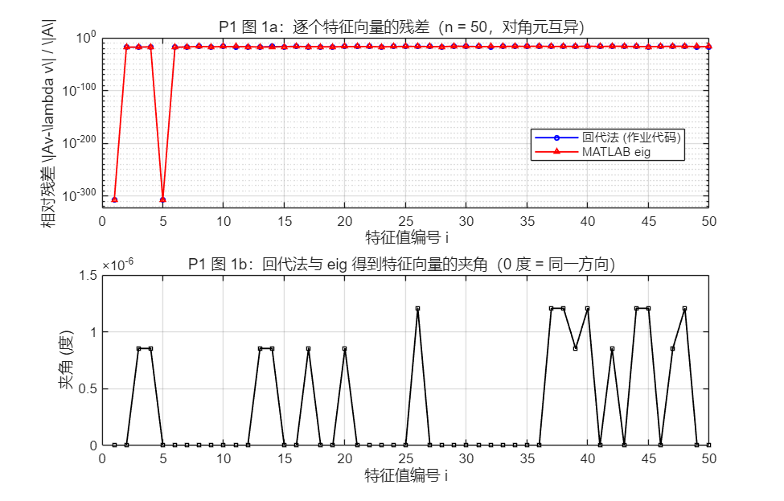
补做图 1 在说什么：上图是 50 个特征向量逐个的相对残差，蓝（回代法）和红（eig）都贴在 $10^{-16}$ 附近、几乎重合——所以「比一比」的答案是：对角元离得开时，回代法和库函数一样准。下图是两者的夹角，绝大多数列严格为 0 度，个别列约 $1.2\times10^{-6}$ 度（差一个符号不算差，比较时取了绝对值）。
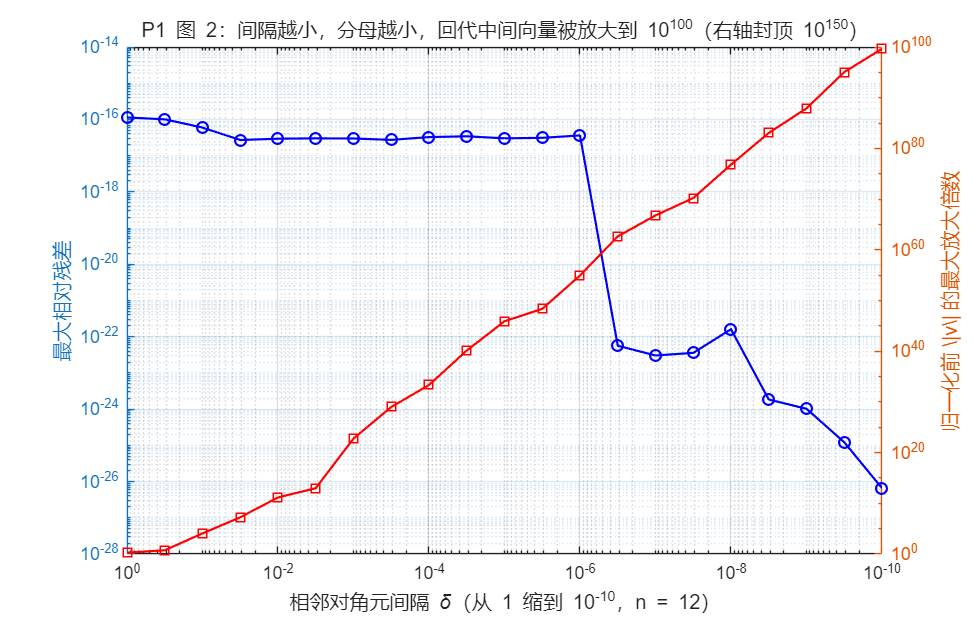
补做图 2 在说什么（这张才是这题的关键）：把相邻对角元的间隔 $\delta$ 从 $1$ 缩到 $10^{-10}$（$n=12$），右轴红线是归一化之前 $\|v\|$ 的放大倍数，从 $1$ 一路涨到 $10^{100}$ 以上。原因就写在回代公式里：分母 $A_{kk}-\lambda$ 是两个特征值之差，间隔每小一个数量级，误差被放大一大截。左轴蓝线是归一化后的残差，看上去还在 $10^{-16}$ 附近甚至更小——归一化把中间量的爆炸掩盖了，这正是只看残差会漏掉的陷阱。
关联笔记：10.27 课堂笔记 §2.3–§2.4，板书里那句「回代分母 = 两个特征值之差」就是这张图的注脚；§2.6 特征向量条件数 $1/|y^{\mathsf T}x|$ 继续解释为什么特征值挤成簇时宁可要不变子空间。
题目在问什么：造 $A=\mathrm{diag}\{d_i\}+zz^{\mathsf T}$，把
画出来，把 $A$ 的特征值标在图上，验证它们正好落在 $f$ 的零点上。
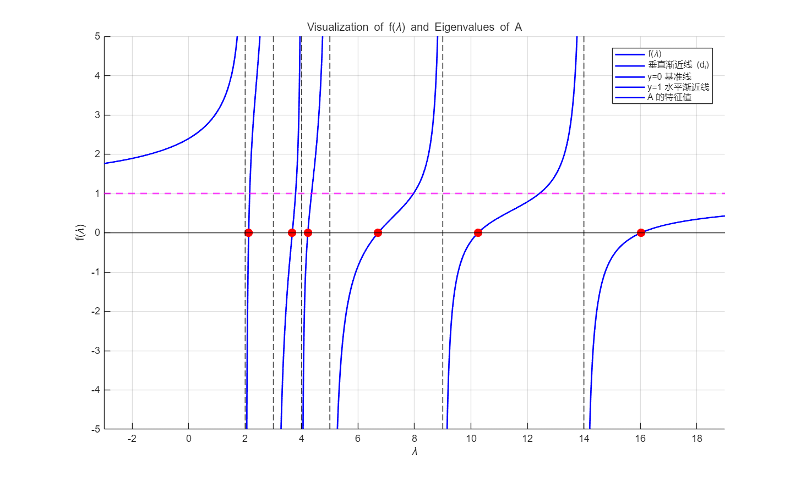
这张图在说什么：蓝色曲线是 $f(\lambda)$，$6$ 条竖直虚线是 $\lambda=d_i$ 处的极点（分母为零，曲线在这里炸到 $\pm\infty$），品红水平虚线是 $f=1$ 的水平渐近线，黑色水平线是 $f=0$。6 个红点（$A$ 的特征值）全部落在 $f(\lambda)=0$ 上，而且每两个相邻极点之间恰好一个——这就是秩一修正的交错（interlacing）性质，也是 D&C 分治算法解特征值方程的图形依据。
关联笔记：10.27 课堂笔记 §5.2（行列式引理三层 → $f(\lambda)=0$）。P3 的证明题（$(\lambda I-D)^{-1}z$ 是 $D+\rho zz^*$ 的特征向量）就是这张图背后的代数。
题目在问什么：实现对称阵的 Jacobi 对角化，比一比不同规模的耗时，画一条收敛史，并观察逐分量的收敛；还鼓励试一次「故意选错旋转」的版本。
代码：P5_Jacobi_diagonalization.m
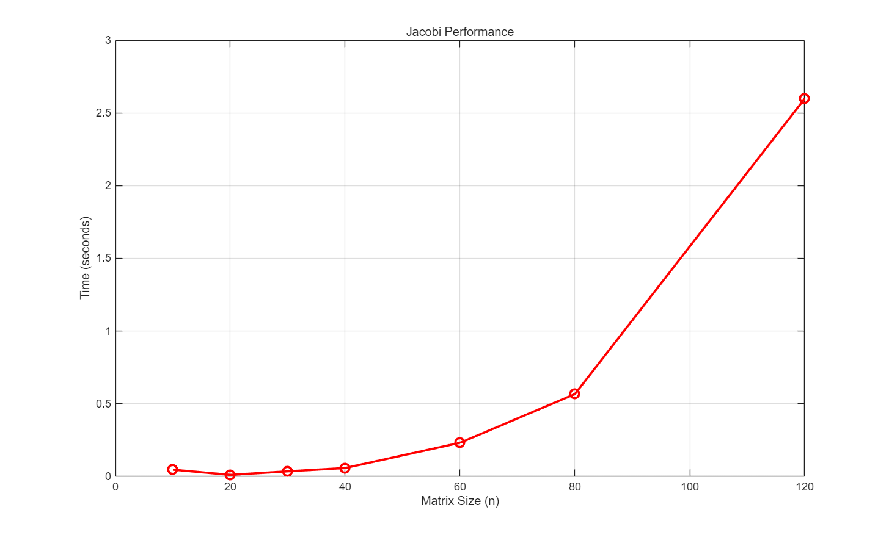
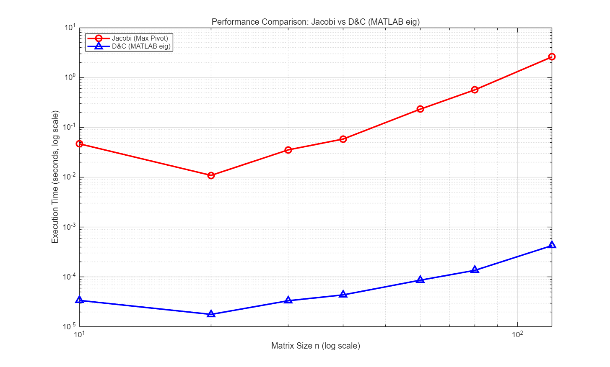
前两张图在说什么：左图 $n=10\to120$ 耗时从接近 0 涨到 2.6 秒，明显是三次以上的增长；右图双对数下和 MATLAB 内置 eig（D&C）对比，红色自写 Jacobi 在 $10^{-2}\sim10^{0}$ 秒，蓝色内置 eig 在 $10^{-3}\sim10^{-2}$ 秒，慢 1~2 个数量级——算法对，工程实现和 LAPACK 差得远。
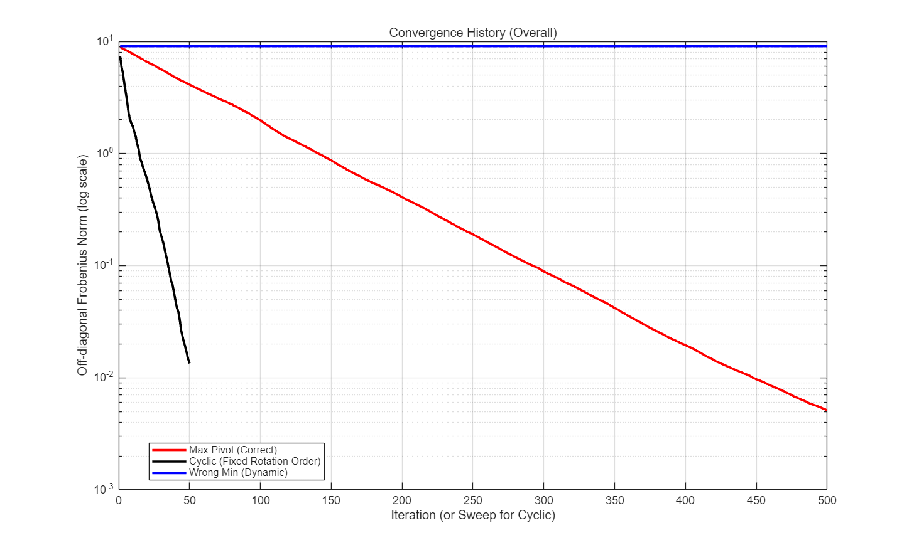
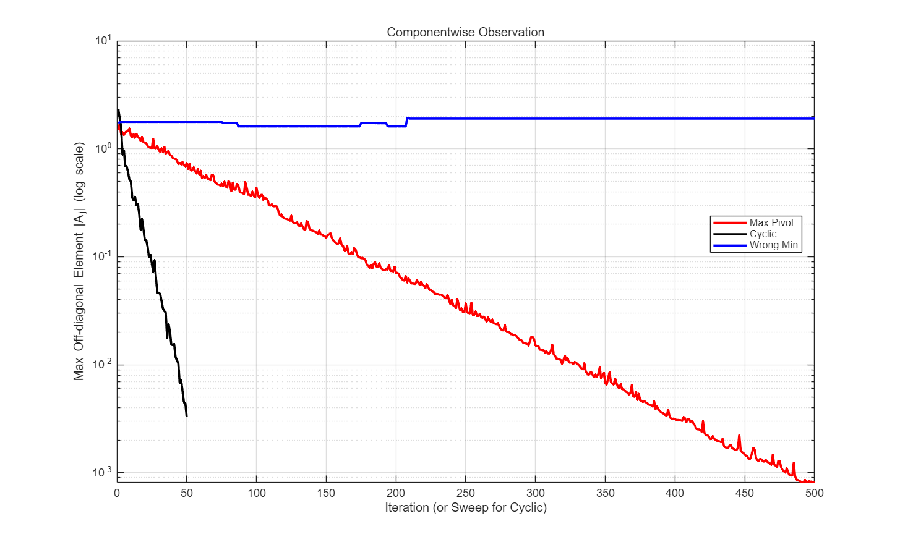
后两张图在说什么：纵轴都是非对角部分的范数（对数刻度），横轴是旋转次数。
所以「选对旋转」不是优化，是算法能不能收敛的前提。右图红色曲线的锯齿状下降就是逐分量收敛的样子：每消掉一个最大非对角元，$\max_{i\ne j}|a_{ij}|$ 掉一截，但下一步又会把别处的值抬起来一点。
关联笔记：10.27 课堂笔记 §4.1–§4.4（一次旋转的 $t=c/s$、$\mathrm{off}(A)$ 与一步收敛率 $\frac{n^2-n-2}{n^2-n}$、经典 $O(n^4)$ vs 循环 $O(n^3)$）。
其余题：P2 Hermitian 阵三对角化（证明次对角元可取非负实数）、P3 秩一修正特征向量的三条证明、P6 cyclic reduction、P7–P9 选做 —— 均无代码。P3 的结论与上面 P4 的图是同一件事的两面。
题目 PDF：homework-20261103.pdf
题目在问什么：用 $A=XJX^{-1}$ 造一个含有非平凡 Jordan 块的满矩阵（$J$ 不是对角阵），再算它的特征值，观察「算出来的特征值离真值有多远」。$A$ 看起来是个普普通通的满矩阵，但它是不可对角化的——这正是陷阱。
作业代码：P4_Jordan_eigenvalue_error.m 做法：$X$ 随机（$\operatorname{cond}(X)\approx110$），$J$ 含一个 3 重 $\lambda=2$ 与一个 2 重 $\lambda=5$ 的 Jordan 块，另拿真对角的 $J$ 做对照。原脚本打印表格：
| $\lambda=2$（三重） | $\lambda=5$（二重） | |
|---|---|---|
| 非平凡 Jordan 块 | $2.4891\times10^{-5}$ | $3.6960\times10^{-7}$ |
| 真对角阵（可对角化） | $\sim10^{-14}$ | $\sim10^{-14}$ |
补做的可视化脚本：VIS_P4_Jordan_forward_error.m（下面三张图由它生成）
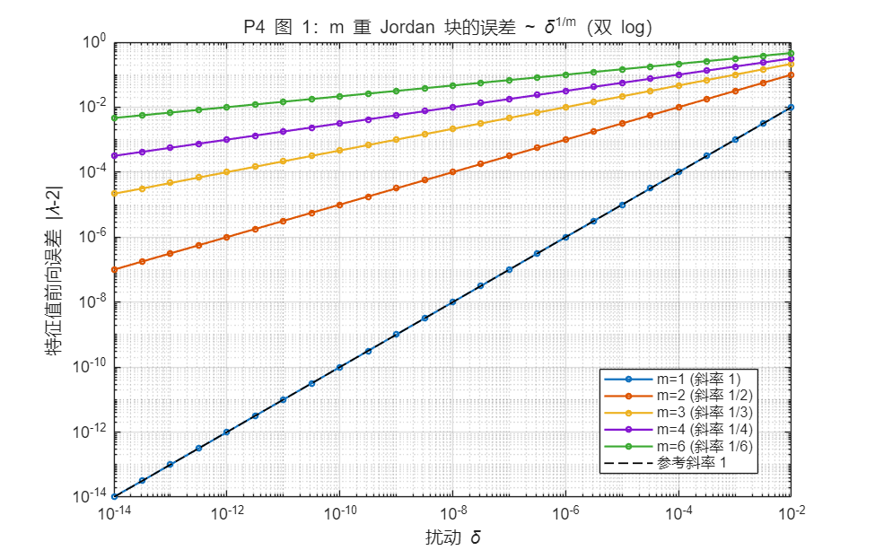
补做图 1 在说什么（把这题的道理一次讲清）：给 $m$ 重 Jordan 块 $J_m(2)$ 的左下角加一个扰动 $\delta$，特征值会分裂成 $2+\delta^{1/m}\omega$，所以前向误差正比于 $\delta^{1/m}$。双对数图上就是斜率 $1/m$ 的直线：$m=1$ 斜率 1，$m=2$ 斜率 1/2，$m=4$ 斜率 1/4……重数越高，直线越平，误差越大。取 $\delta=10^{-14}$、$m=4$，误差就是 $3.16\times10^{-4}$。双精度舍入本身就有 $\delta\approx10^{-16}$，四重块的特征值误差天生在 $10^{-4}$ 量级，跟原脚本跑出的 $2.49\times10^{-5}$ 完全对得上。
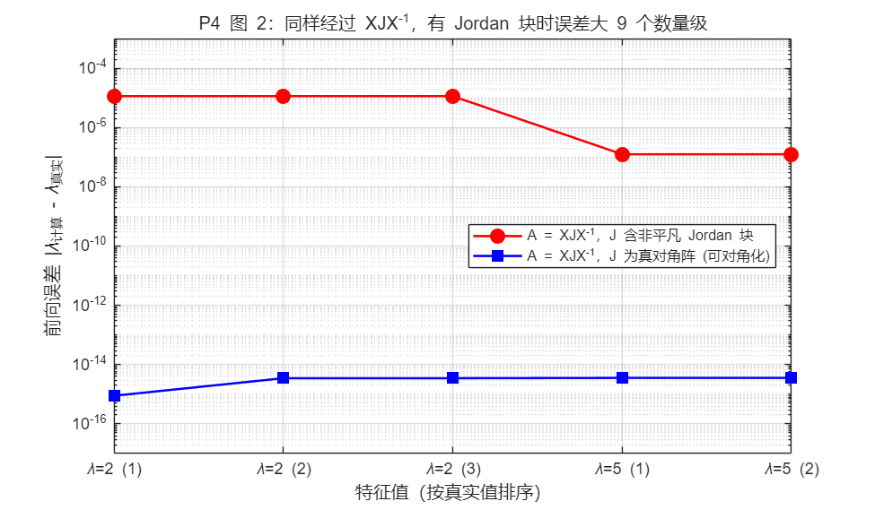
补做图 2 在说什么：同样的 $XJX^{-1}$ 构造流程，只把 $J$ 从 Jordan 块换成真对角阵，五个特征值的前向误差就从 $1.14\times10^{-5}$ 掉到 $3.55\times10^{-15}$——差 9 个数量级。可对角化时特征值的条件数由 $X$ 决定（这里 $\operatorname{cond}(X)\approx110$，很温和）；有 Jordan 块时条件数实际上是无穷的，误差由 $\delta^{1/m}$ 主导，跟 $X$ 病不病态关系不大。
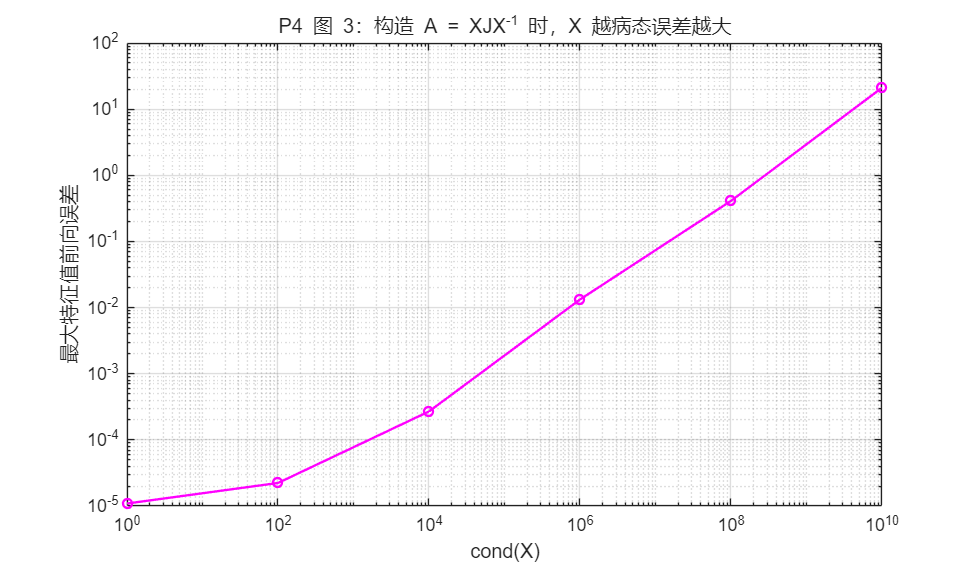
补做图 3 在说什么：把 $\operatorname{cond}(X)$ 从 $1$ 扫到 $10^{10}$，误差从 $10^{-6}$ 单调涨到 $O(1)$。构造 $A=XJ/X$ 这一步本身要解线性方程组、要做矩阵乘法，$X$ 越病态，这些运算引入的舍入越大，等于给 $\delta$ 加码。所以真实场景里两个因素叠加：Jordan 块决定指数 $1/m$、$X$ 的条件数决定扰动 $\delta$ 有多大。
其余题：P1 证明存在特征值使 $|\lambda-\hat\lambda|\le\|r\|_2$、P2 证明 $|\sigma_i(Y^*AX)-\sigma_i(A)|\le\epsilon\,\sigma_i(A)$、P3 构造把 $[x,y]$ 两列正交化的旋转矩阵 —— 都是证明/构造题；P5 复现 From Random Polygon to Ellipse 的实验（论文 PDF 在工作区）未做；P6–P8 选做未做。
| 图中看到的现象 | 笔记里的推导 | 相关作业 |
|---|---|---|
| Arnoldi 正交性随 $k$ 丢失 | 10.20 §4.3–§4.5 | 10-13 P2、09-29 P4 |
| 幂法一步收敛 / 讨论题的重根情形 | 10.13 补课 §1.4 | 10-13 P3/P4/P5 |
| 子空间迭代卡在 $10^{-8}$ | 10.20 §3.4 | 10-20 P3 |
| RQI 三次收敛 | 10.13 补课 §2.6 | 10-20 P2 |
| 回代分母 = 特征值之差 | 10.27 §2.3–§2.6 | 10-27 P1 |
| $f(\lambda)=0$ 与特征值交错 | 10.27 §5.2 | 10-27 P3/P4 |
| $\mathrm{off}(A)$ 下降、错旋转不收敛 | 10.27 §4.1–§4.4 | 10-27 P5 |
上面的
.html链接在 github.com 上点开只会看到源码，看渲染版请走 GitHub Pages；或克隆仓库后直接双击打开（KaTeX 已随仓库提交，离线可用）。
课程内容与题目 PDF 版权归复旦大学及授课教师所有；代码与图为我本人所作，仅供个人复习存档。
题目 PDF 与课程内容版权归复旦大学及授课教师所有；代码、补做的可视化脚本与结果图为我本人所作。
本页共 204 个公式，KaTeX 0.16.11 及全部 20 个字体文件随仓库提交于 ../assets/katex/，完全离线可用。
在 github.com 上点开本文件只会看到源码，看渲染版请走
GitHub Pages，
或克隆仓库后直接双击打开。